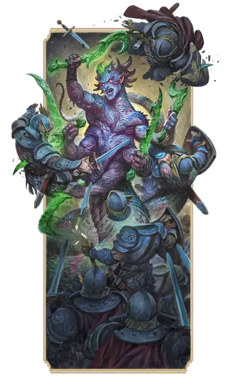

Марилит
Marilith
Большое Исчадие (Демон), Хаотичное Злое

Класс Защиты 16 Инициатива +10 (20)
Хиты 220 (21к10 + 105)
Скорость 40 футов, Лазания 40 футов
| мод | спас | ||
|---|---|---|---|
| СИЛ | 18 | +4 | +9 |
| ЛОВ | 20 | +5 | +5 |
| ТЕЛ | 20 | +5 | +10 |
| мод | спас | ||
|---|---|---|---|
| ИНТ | 18 | +4 | +4 |
| МДР | 16 | +3 | +8 |
| ХАР | 20 | +5 | +10 |
Сопротивление урону Огонь, Холод, Электричество
Иммунитеты Яд; Отравленный
Чувства пассивное Восприятие 18, Истинное зрение 120 футов
Языки Бездны, Телепатия 120 фт.
Опасность 16 (15 000 опыта; БВ +5)
Особенности
Восстановление демона. Когда марилит умирает за пределами Бездны, её тело превращается в лужу ихора и в тот же миг заново возрождается со всеми Хитами где-то в Бездне.
Сопротивление магии. Марилит совершает с Преимуществом спасброски от заклинаний и прочих магических эффектов.
Реактивность. Марилит может совершить одну Реакцию в каждый ход сражения.
Действия
Мультиатака. Марилит совершает шесть атак Клинком договора и использует Сдавливание.
Клинок договора. Бросок рукопашной атаки: +10, досягаемость 5 фт. Попадание: 10 (1к10 + 5) Рубящего урона плюс 7 (2к6) Некротического урона.
Сдавливание. Спасбросок Силы: Сл 17, одно видимое марилит существо Среднего размера или меньше в 5 футах. Провал: 15 (2к10 + 4) Дробящего урона. Цель Схвачена (Сл освобождения от захвата 14); пока длится захват, она также Опутана.
Бонусные действия
Телепортация (Перезарядка 5-6). Марилит телепортируется в видимое ей незанятое пространство в пределах 120 футов от неё.
Реакции
Парирование. Условие: По марилит попали броском рукопашной атакой, пока она держит оружие. Эффект: Марилит получает бонус +5 к КЗ против этой атаки, что может привести к её промаху.
Бонус мастерства +5
Среда обитания Бездна
Сокровища Оружейные
Марилит
Демон жестокости и злобы
Марилиты — шестирукие змееподобные демоны, что орудуют смертоносными клинками, выкованными в Бездне. Этим проклятым оружием и опытом бессчётных битв они ведут других демонов на истребление добродетельных душ. Часто под их началом служат полчища более слабых демонов.